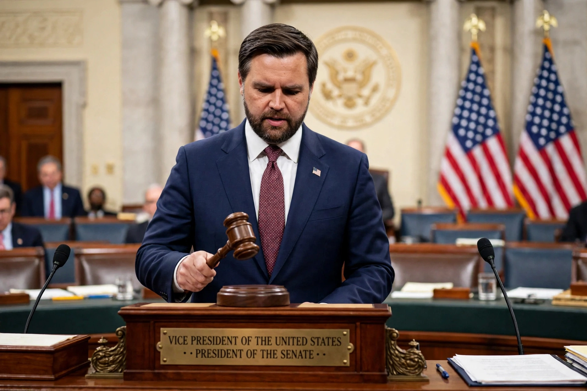

Vice President of the United States
From Wikipedia, the free encyclopedia

The Vice President of the United States is the second-highest officer in the executive branch of the US federal government, ranking first in the presidential line of succession. Elected jointly with the President of the United States on the same ticket through the United States Electoral College, the vice president's constitutional duties are spare — presiding over the Senate (with a casting vote) and succeeding or acting as president — but the modern office, reshaped since Walter Mondale (1977–81), is a working partnership: adviser, troubleshooter and heir apparent.
History
The early office was a sinceure ('the most insignificant office that ever the invention of man contrived', said its first holder, John Adams); nine vice presidents have succeeded to the presidency on death or resignation (Tyler to Ford), setting the precedent of full succession (the Tyler precedent, codified by the 25th Amendment, 1967, which also fills vice-presidential vacancies — used twice in 1973–74). The 12th Amendment (1804) ended the runner-up system.
Modern office
Since Mondale's memorandum with Carter, vice presidents have West Wing offices, weekly private lunches with the president and real portfolios (Gore's reinventing-government, Cheney's exceptional influence, often seen as the office's high-water mark of power); Kamala Harris (2021–25) was the first woman and first person of colour in the role. The vice presidency's revival is complete enough that its selection is now a campaign's first governing decision — and its holder the presumptive next nominee, though only some have won the prize.